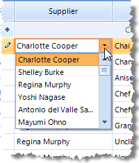
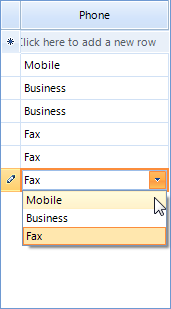

GridViewComboBoxColumn
GridViewComboBoxColumn displays a set of predefined candidate text values in a
drop down list. This column type is typically used to provide a lookup into some set of relatively static values.
To use GridViewComboBoxColumn:
Set the DataSource property to the data source that contains
possible values to choose from.Set the DisplayMember property to the column of the
DataSource that should be displayed in the drop down list.Set the ValueMember property to the column of the
DataSource that should be used to update the cell within
the grid represented by the FieldName property.
Values will display in the column only if the value in FieldName is within
the range of values provided by the ValueMember field values.
Other important properties for GridViewComboBoxColumn are:
FilterMode - has two values DisplayMember and
ValueMember, and as the name of the property speaks this setting will
determine whether the column will be filtered according to the DisplayMember
or the ValueMember.DisplayMemberSort - this property will determine whether the column will
be sorted by the column's DisplayMember or ValueMember.
Setting it to true will sort by DisplayMember,
otherwise the sorting will be executed according to the ValueMember
By default, when sorting is executed on GridViewComboBoxColumn it is sorted according to its
ValueMember setting. However, if you need to perform the sorting according
to the DisplayMember instead, you should set the DisplayMemberSort property of the
column.
GridViewComboBoxColumn inherits from GridViewDataColumn.
[C#] Adding and binding GridViewComboBoxColumn
GridViewComboBoxColumn supplierColumn = new GridViewComboBoxColumn();
supplierColumn.Name = "SupplierColumn";
supplierColumn.HeaderText = "Supplier";
supplierColumn.DataSource = this.suppliersBindingSource;
supplierColumn.ValueMember = "SupplierID";
supplierColumn.DisplayMember = "ContactName";
supplierColumn.FieldName = "SupplierID";
supplierColumn.Width = 200;
this.radGridView1.Columns.Add(supplierColumn);
[VB.NET] Adding and binding GridViewComboBoxColumn
Dim supplierColumn As GridViewComboBoxColumn = New GridViewComboBoxColumn
supplierColumn.Name = "SupplierColumn"
supplierColumn.HeaderText = "Supplier"
supplierColumn.DataSource = Me.SuppliersBindingSource
supplierColumn.ValueMember = "SupplierID"
supplierColumn.DisplayMember = "ContactName"
supplierColumn.FieldName = "SupplierID"
supplierColumn.Width = 200
Me.RadGridView1.Columns.Add(supplierColumn)
If you want to set initial values, you should match the GridViewComboBoxColumn to
a column which has appropriate values in it. To do this, you should set the FieldName
of the GridViewComboBoxColumn to be the same as the name of the existing column.
In order to access the RadDropDownListEditor, you should subscribe to the
CellEditorInitialized event of RadGridView. This event
is fired when the initialization of an editor is done. The EditorElement property
of the RadDropDownListEditor gives you access to the
RadDropDownListEditorElement which allows you to apply various customizations
to the editor's element:
[C#] Modify the DropDownList editor
void radGridView1_CellEditorInitialized(object sender, GridViewCellEventArgs e)
{
RadDropDownListEditor editor = this.radGridView1.ActiveEditor as RadDropDownListEditor;
if (editor != null)
{
((RadDropDownListEditorElement)((RadDropDownListEditor)this.radGridView1.ActiveEditor).EditorElement).RightToLeft = true;
}
}
[VB.NET] Modify the DropDownList editor
Private Sub RadGridView1_CellEditorInitialized(ByVal sender As Object, ByVal e As Telerik.WinControls.UI.GridViewCellEventArgs) Handles RadGridView1.CellEditorInitialized
Dim editor As RadDropDownListEditor = TryCast(Me.RadGridView1.ActiveEditor, RadDropDownListEditor)
If Not editor Is Nothing Then
CType((CType(Me.RadGridView1.ActiveEditor, RadDropDownListEditor)).EditorElement, RadDropDownListEditorElement).RightToLeft = True
End If
End Sub
Binding to array of strings
The following example demonstrates a case where the combo box is bound to a column with string values in the data source.
In this case the DisplayMember and ValueMember are the same,
an you need just an array of strings as a datasource to the ComboBoxColumn (those strings should be equal to the possible
values in the data source):
[C#] Bind to array of string
//Create the data source and fill some data
DataTable table = new DataTable();
table.Columns.Add("Phone", typeof(string));
table.Rows.Add("Mobile");
table.Rows.Add("Business");
table.Rows.Add("Business");
table.Rows.Add("Fax");
table.Rows.Add("Fax");
table.Rows.Add("Fax");
//allow the grid to genetate its columns
this.radGridView1.MasterTemplate.AutoGenerateColumns = false;
//set the grid data source
this.radGridView1.DataSource = table;
//create the combo box column
GridViewComboBoxColumn comboColumn = new GridViewComboBoxColumn("Phone");
//set the column data source - the possible column values
comboColumn.DataSource = new String[] { "Mobile", "Business", "Fax" };
//set the FieldName - the column will retrieve the value from "Phone" column in the data table
comboColumn.FieldName = "Phone";
//add the column to the grid
radGridView1.Columns.Add(comboColumn);
[VB.NET] Bind to array of string
'Create the data source and fill some data
Dim table As New DataTable()
table.Columns.Add("Phone", GetType(String))
table.Rows.Add("Mobile")
table.Rows.Add("Business")
table.Rows.Add("Business")
table.Rows.Add("Fax")
table.Rows.Add("Fax")
table.Rows.Add("Fax")
'allow the grid to genetate its columns
Me.RadGridView1.MasterTemplate.AutoGenerateColumns = False
'set the grid data source
Me.RadGridView1.DataSource = table
'create the combo box column
Dim comboColumn As New GridViewComboBoxColumn("Phone")
'set the column data source - the possible column values
comboColumn.DataSource = New [String]() {"Mobile", "Business", "Fax"}
'set the FieldName - the column will retrieve the value from "Phone" column in the data table
comboColumn.FieldName = "Phone"
'add the column to the grid
RadGridView1.Columns.Add(comboColumn)

Binding to collection of custom object
The example below extends the previous sample, where we bound the combo column to array of strings, by adding a text box column and
another combo column, this time bound to a collection of custom object. The first step is to define your grid data source,
fill in some data, and set column auto-generation to false so that the grid does not generate
its columns from the data source. Next, the grid columns are created and mapped to the data base columns. Note that you have to define
a separate data source for each of your combo box columns different form the one of your grid.
This separate data sources have helper function, the actual data for your combobox columns is still in your grid data
source as it is for any other type of column (e.g. decimal column). The data source for the first combo column is a string
array (from the previous example) and for the second combo column is a BindingList.
The BindingList consists of objects having properties for your value member and display member. In the sample code below,
Id is the ValueMember and MyString the DisplayMember. The
"Another ComboBox column" in the grid data source is of type int and our custom
object has a property of type int. So in order to link the data source field to our custom object integer field,
we have set the ValueMember to "Id".
You may use a DataTable in the same way like the BindingList.
[C#] Binding to collection of custom object
public partial class GridViewComboBoxColumn2 : Form
{
public GridViewComboBoxColumn2()
{
InitializeComponent();
DataTable table = new DataTable();
table.Columns.Add("Text", typeof(string));
table.Columns.Add("Phone", typeof(string));
table.Columns.Add("Another ComboBox column", typeof(int));
table.Rows.Add("Text 1", "Mobile", 1);
table.Rows.Add("Text 2", "Business", 1);
table.Rows.Add("Text 3", "Business", 2);
table.Rows.Add("Text 4", "Fax", 1);
this.radGridView1.MasterTemplate.AutoGenerateColumns = false;
radGridView1.Columns.Add(new GridViewTextBoxColumn("Text"));
GridViewComboBoxColumn comboCol = new GridViewComboBoxColumn("Phone");
comboCol.DataSource = new String[] { "Mobile", "Business", "Fax" };
comboCol.FieldName = "Phone";
radGridView1.Columns.Add(comboCol);
GridViewComboBoxColumn colboCol2 = new GridViewComboBoxColumn("Another ComboBox column");
colboCol2.FieldName = "Another ComboBox column";
colboCol2.ValueMember = "Id";
colboCol2.DisplayMember = "MyString";
BindingList<ComboBoxDataSourceObject> list = new BindingList<ComboBoxDataSourceObject>();
ComboBoxDataSourceObject object1 = new ComboBoxDataSourceObject();
object1.Id = 1;
object1.MyString = "First object";
list.Add(object1);
ComboBoxDataSourceObject object2 = new ComboBoxDataSourceObject();
object2.Id = 2;
object2.MyString = "Second object";
list.Add(object2);
colboCol2.DataSource = list;
radGridView1.Columns.Add(colboCol2);
this.radGridView1.DataSource = table;
}
}
public class ComboBoxDataSourceObject
{
private string myString;
public string MyString
{
get { return myString; }
set { myString = value; }
}
private int id;
public int Id
{
get { return id; }
set { id = value; }
}
}
[VB.NET] Binding to collection of custom object
Public Class GridViewComboBoxColumn2
Public Sub New()
InitializeComponent()
Dim table As New DataTable()
table.Columns.Add("Text", GetType(String))
table.Columns.Add("Phone", GetType(String))
table.Columns.Add("Another ComboBox column", GetType(Integer))
table.Rows.Add("Text 1", "Mobile", 1)
table.Rows.Add("Text 2", "Business", 1)
table.Rows.Add("Text 3", "Business", 2)
table.Rows.Add("Text 4", "Fax", 1)
Me.RadGridView1.MasterTemplate.AutoGenerateColumns = False
RadGridView1.Columns.Add(New GridViewTextBoxColumn("Text"))
Dim comboCol As New GridViewComboBoxColumn("Phone")
comboCol.DataSource = New [String]() {"Mobile", "Business", "Fax"}
comboCol.FieldName = "Phone"
RadGridView1.Columns.Add(comboCol)
Dim colboCol2 As New GridViewComboBoxColumn("Another ComboBox column")
colboCol2.FieldName = "Another ComboBox column"
colboCol2.ValueMember = "Id"
colboCol2.DisplayMember = "MyString"
Dim list As New BindingList(Of ComboBoxDataSourceObject)()
Dim object1 As New ComboBoxDataSourceObject()
object1.Id = 1
object1.MyString = "First object"
list.Add(object1)
Dim object2 As New ComboBoxDataSourceObject()
object2.Id = 2
object2.MyString = "Second object"
list.Add(object2)
colboCol2.DataSource = list
RadGridView1.Columns.Add(colboCol2)
Me.RadGridView1.DataSource = table
End Sub
End Class
Public Class ComboBoxDataSourceObject
Private myString_ As String
Public Property MyString() As String
Get
Return myString_
End Get
Set(value As String)
myString_ = value
End Set
End Property
Private m_id As Integer
Public Property Id() As Integer
Get
Return m_id
End Get
Set(value As Integer)
m_id = value
End Set
End Property
End Class

Customizing DropDownList editors in RadGridView
You have to handle the EditorRequired event. This event is fired every time when an editor needs to be shown.
A sample code demonstrating this technique:
[C#] Customize the DropDownListEditor in GridViewComboBoxColumn
public GridViewComboBoxColumn3()
{
InitializeComponent();
GridViewComboBoxColumn customerColumn = new GridViewComboBoxColumn();
customerColumn.Name = "CustomerColumn";
customerColumn.HeaderText = "Customer";
customerColumn.DataSource = this.customersBindingSource;
customerColumn.ValueMember = "CustomerID";
customerColumn.DisplayMember = "ContactName";
customerColumn.FieldName = "CustomerID";
customerColumn.Width = 200;
this.radGridView1.Columns.Add(customerColumn);
radGridView1.EditorRequired += new EditorRequiredEventHandler(radGridView1_EditorRequired);
}
MyDropDownListEditor myComboEditor = new MyDropDownListEditor();
void radGridView1_EditorRequired(object sender, EditorRequiredEventArgs e)
{
if (e.EditorType == typeof(RadDropDownListEditor))
{
e.Editor = new MyDropDownListEditor();
}
}
private void GridViewComboBoxColumn3_Load(object sender, EventArgs e)
{
// TODO: This line of code loads data into the 'nwindDataSet.Customers' table. You can move, or remove it, as needed.
this.customersTableAdapter.Fill(this.nwindDataSet.Customers);
}
}
public class MyDropDownListEditor : RadDropDownListEditor
{
protected override RadElement CreateEditorElement()
{
return new MyDropDownListEditorElement();
}
}
public class MyDropDownListEditorElement : RadDropDownListEditorElement
{
protected override void OnLoaded()
{
base.OnLoaded();
this.ListElement.CreatingVisualItem += new CreatingVisualListItemEventHandler(ListElement_CreatingVisualItem);
}
private void ListElement_CreatingVisualItem(object sender, CreatingVisualListItemEventArgs args)
{
// add button element
RadListVisualItem visualItem = new RadListVisualItem();
visualItem.Padding = new Padding(12, 0, 0, 0);
visualItem.NumberOfColors = 1;
visualItem.BackColor = Color.Yellow;
RadButtonElement button = new RadButtonElement();
button.MinSize = new Size(12, 12);
button.MaxSize = button.MinSize;
button.Text = "x";
button.TextAlignment = ContentAlignment.MiddleLeft;
button.Click += new EventHandler(button_Click);
visualItem.Children.Add(button);
args.VisualItem = visualItem;
}
private void button_Click(object sender, EventArgs e)
{
BindingSource source = (BindingSource)this.DataSource;
source.Remove(source.Current);
this.SelectedIndex = -1;
}
}
[VB.NET] Customize the DropDownListEditor in GridViewComboBoxColumn
Public Class GridViewComboBoxColumn3
Public Sub New()
InitializeComponent()
Dim customerColumn As GridViewComboBoxColumn = New GridViewComboBoxColumn
customerColumn.Name = "CustomerColumn"
customerColumn.HeaderText = "Customer"
customerColumn.DataSource = Me.CustomersBindingSource
customerColumn.ValueMember = "CustomerID"
customerColumn.DisplayMember = "ContactName"
customerColumn.FieldName = "CustomerID"
customerColumn.Width = 200
Me.RadGridView1.Columns.Add(customerColumn)
End Sub
Private Sub GridViewComboBoxColumn3_Load(ByVal sender As System.Object, ByVal e As System.EventArgs) Handles MyBase.Load
'TODO: This line of code loads data into the 'NwindDataSet.Customers' table. You can move, or remove it, as needed.
Me.CustomersTableAdapter.Fill(Me.NwindDataSet.Customers)
End Sub
Private Sub RadGridView1_EditorRequired(ByVal sender As Object, ByVal e As Telerik.WinControls.UI.EditorRequiredEventArgs) Handles RadGridView1.EditorRequired
If e.EditorType Is GetType(RadDropDownListEditor) Then
e.Editor = New MyDropDownListEditor()
End If
End Sub
End Class
Public Class MyDropDownListEditor
Inherits RadDropDownListEditor
Protected Overrides Function CreateEditorElement() As RadElement
Return New MyDropDownListEditorElement()
End Function
End Class
Public Class MyDropDownListEditorElement
Inherits RadDropDownListEditorElement
Protected Overrides Sub OnLoaded()
MyBase.OnLoaded()
AddHandler Me.ListElement.CreatingVisualItem, AddressOf ListElement_CreatingVisualItem
End Sub
Private Sub ListElement_CreatingVisualItem(ByVal sender As Object, ByVal args As CreatingVisualListItemEventArgs)
' add button element
Dim visualItem As New RadListVisualItem()
visualItem.Padding = New Padding(12, 0, 0, 0)
visualItem.NumberOfColors = 1
visualItem.BackColor = Color.Yellow
Dim button As New RadButtonElement()
button.MinSize = New Size(12, 12)
button.MaxSize = button.MinSize
button.Text = "x"
button.TextAlignment = ContentAlignment.MiddleLeft
AddHandler button.Click, AddressOf button_Click
visualItem.Children.Add(button)
args.VisualItem = visualItem
End Sub
Private Sub button_Click(ByVal sender As Object, ByVal e As EventArgs)
' Remove the item from the DataSource collection
Dim source = DirectCast(Me.DataSource, BindingSource)
source.Remove(source.Current)
Me.SelectedIndex = -1
End Sub
End Class